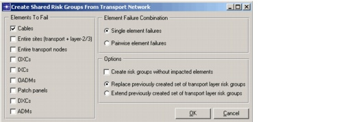

Designing Robust Multi-Layer Networks > Shared Risk Groups > Creating Transport-Layer SRGs
Creating Transport-Layer SRGs
To create transport-layer SRGs, open the SWIM project in SP Guru Network Planner and choose SWIM > Create Shared Risk Groups From Transport Network. When the dialog box appears, you can specify the types of SRGs to create (see Figure 6-1 and Table 6-1-Created Shared Risk Groups from Transport Network Dialog Box ). SWIM uses the current node and link mapping information to specify the Impacted Elements (Layer-2/3 links) for each specific risk group.
Figure 6-1 Create Shared Risk Groups From Transport Network Dialog Box

| Home © 1987-2007 OPNET Technologies, Inc. All Rights Reserved. This software may be covered by one or more U.S. Patents. See complete patent notice in the Legal Notices section. OPNET Support Center |